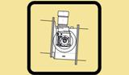
Vlastní vývoj GTC PlusRegulační & Uzavírací armatury
Válcový regulační uzávěr VRU
Průmyslový válcový regulační uzávěr pro regulaci toku a uzavírání sypkých suchých nelepivých hmot.
Komplexní řešení pro průmysl stavebních hmot, úpravu a zpracování nerostných surovin, chemii i gumárenství. Od 3D CAD konstrukce přes výrobu a montáž až po záruční a generální servis.
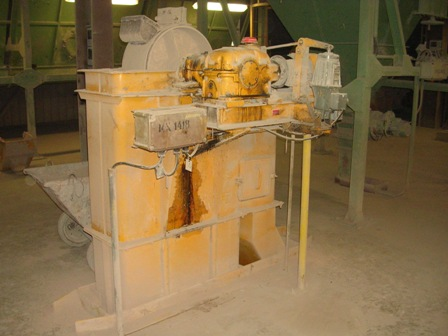
Přehled 18 výrobních řad a technologických celků z vlastního vývoje a zakázkové výroby GTC Plus Hranice. Kliknutím na jakoukoliv položku zobrazíte detailní technickou specifikaci, rozměrové řady a výkony.

Vlastní vývoj GTC PlusPrůmyslový válcový regulační uzávěr pro regulaci toku a uzavírání sypkých suchých nelepivých hmot.
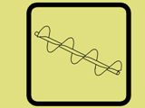
Zakázková výrobaTrubkové a žlabové šnekové dopravníky pro vodorovnou, šikmou i svislou přepravu sypkých hmot.
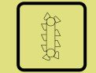
Vysoký vertikální výkonPrachotěsný šachtový elevátor pro vertikální dopravu cementu, slínku, krupice a sypkých hmot do sil.
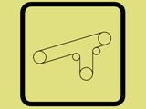
Ověřeno v lomech a cementárnáchPrůmyslové pásové dopravníky pro kontinuální transport kameniva, štěrku, písku a surovin.
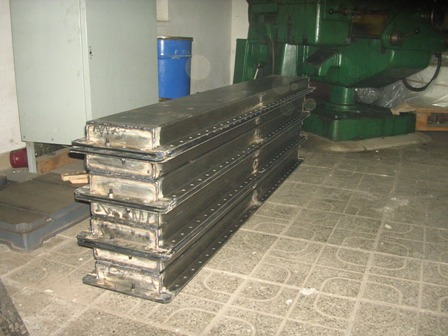
Teplotní odolnost do 220 °CRobustní článkový dopravník pro transport horkého a abrazivního slínku, vápence a koksu.
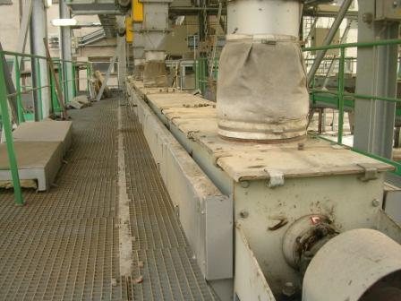
Prachotěsný hermetický systémPrachotěsný řetězový dopravník pro vodorovnou a šikmou dopravu horkých a abrazivních sypnin.
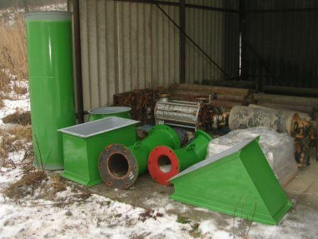
Bezhlučný gravitační transportEnergeticky úsporný pneumatický fluidizační žlab pro dopravu jemně mletých hmot.
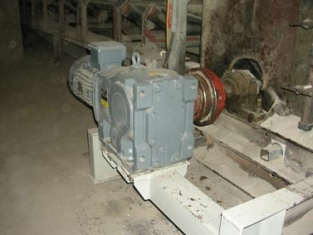
Přesné kontinuální dávkováníPřesný pásový podavač pro kontinuální dávkování komponent do cementových a surovinových mlýnů.
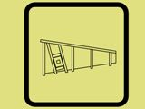
Pro těžký lomový kámenMasivní podavač s třídicím roštem pro dávkování rubaniny do primárních čelisťových drtičů.
Těžký článkový podavač pro kontinuální vynášení středně a hrubozrnných materiálů ze zásobníků.
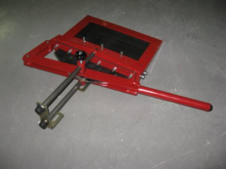
Pro vlhké a lepivé surovinyHorizontální talířový podavač s nastavitelným stěracím nožem pro dávkování obtížně tekoucích hmot.
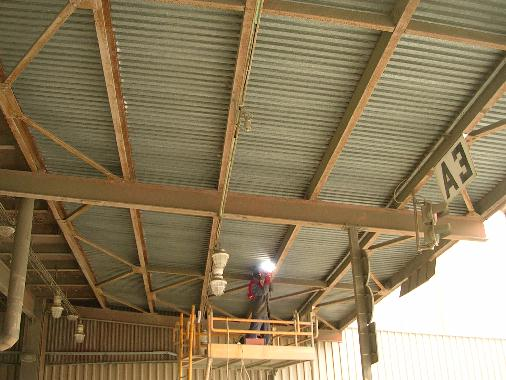
Pro frakce 150–700 mmClonový řetězový regulátor výsypu těžkých balvanů a kusového kamene z násypek.
Rotační komůrkový podavač pro kontinuální výsyp suchých sypnin s pneumatickým oddělením tlaků.
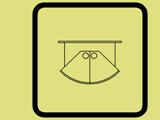
Spolehlivé havarijní uzavřeníPrůmyslová šoupátka, segmentové a žaluziové uzávěry a kývavé klapky pro sila a násypky.
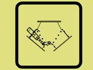
Přepínání technologických trasRobustní přesměrovací rozbočky toku sypkých materiálů do skládek, sil a dopravníků.
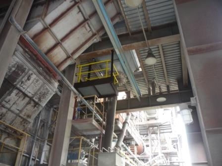
ČSN EN 1090-2 & EN 287-1Návrh, výroba a montáž technologických plošin, obslužných lávek a schodišťových věží.
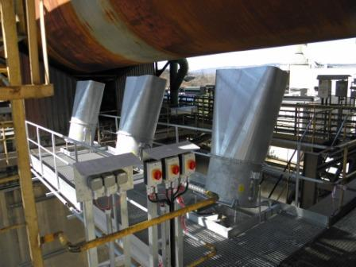
Reference Cement Hranice, a.s.Technologické chladicí systémy pro ochranu pláště a žáruvzdorné vyzdívky cementářských pecí.
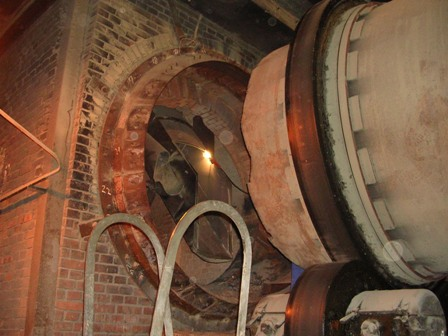
Linka B (2010) a Linka C (2013)Komplexní rekonstrukce přívodu horkých plynů a materiálu do rotačních sušicích bubnů.
Naše stroje a inženýrská řešení pracují v nepřetržitém zatížení u předních průmyslových výrobců stavebních hmot a v těžebních provozech.
Kompletní projekt, výroba a montáž chladicích jednotek pláště rotační pece na výrobu slínku. Sestava vysokovýkonných ventilátorových agregátů, vzduchotechnického potrubí a směrových ofukových dýz pro ochranu pláště a prodloužení životnosti žáruvzdorné vyzdívky.
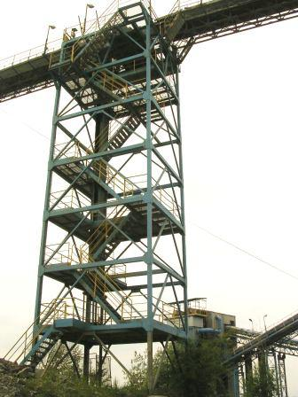
Kamenolomy ČR s.r.o.Generální rekonstrukce podlahových konstrukcí, schodišťových věží a technologických tras pásového dopravníku D5 pro přepravu drceného kameniva. Dodávka a výměna potrubních dílů odprášení finálního třídiče kameniva.
Projekt, výroba a montáž nového přívodu tepla a suroviny do sušicích bubnů linek B (2010) a C (2013). Konstrukce odolná vysokoteplotnímu namáhání, abrazivním materiálům a tepelným dilatacím.
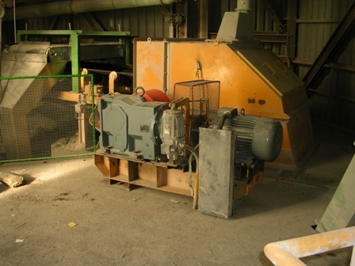
CEMMAC Horné Srnie / AliacemNáročná strojírenská výměna čepu mlýna a ložiska na surovinovém mlýnu OM II v CEMMAC Horné Srnie. Dále komplexní modernizace pohonů pásových dopravníků a náhrada původních elektrobubnů novými pohonnými jednotkami Nord.
Firma GTC Plus disponuje vlastní konstrukční a technickou kanceláří. Zajišťujeme kompletní inženýrský cyklus od úvodní studie a 3D modelu až po dílenské výrobní výkresy a technickou dokumentaci.
Licencovaný 3D/2D CAD software (ZwCAD licence 2005SR02999, TDS-Technik komplet). Vývoj nových strojů i přesné překreslování původní papírové dokumentace.
Technické zprávy, dodací a přejímací předpisy, pasporty strojů a prohlášení o shodě. Kompletní předání v tištěné podobě i v elektronických formátech DWG, DXF, PDF.
Přesné zaměření geometrie stávajících zařízení bez dochované dokumentace, ustavování souososti pohonů laserem a technický dozor při montážích.
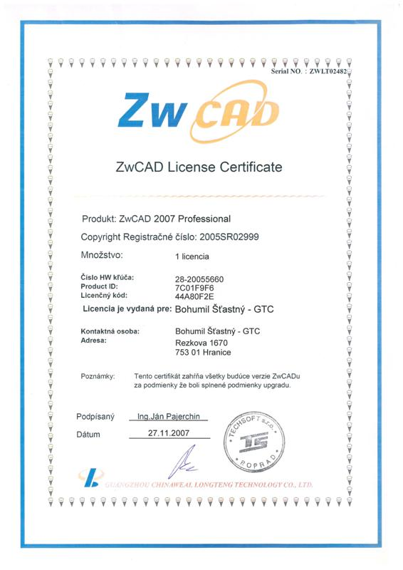
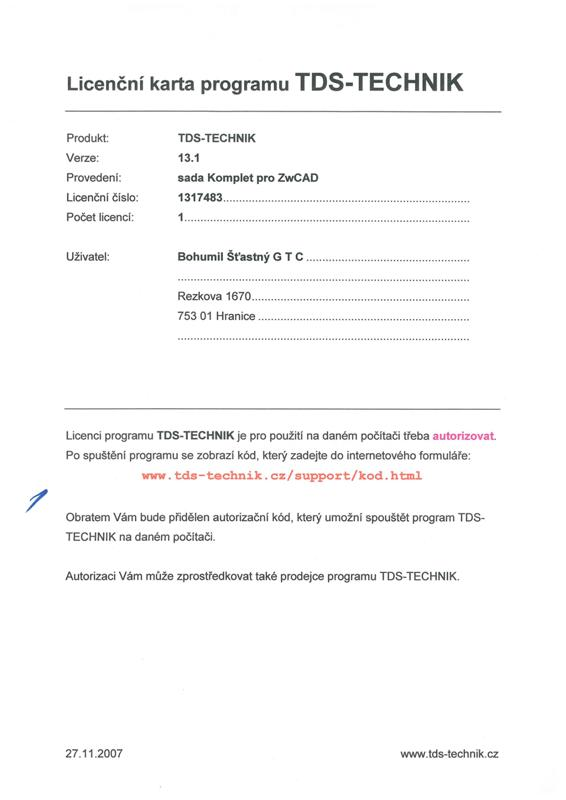
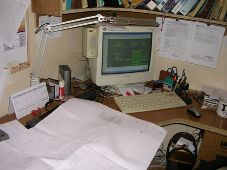
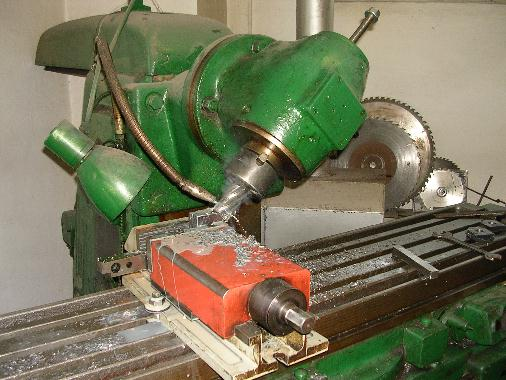
Disponujeme plně vybavenými montážními kontejnery pro externí montáže, servisními vozidly a zkušeným týmem montérů a svářečů s mnohaletou průmyslovou praxí.
Provádíme běžné, střední i generální opravy rotačních pecí, mlýnic, drtičů a dopravních tras. Specializujeme se na plánované odstávky s důrazem na dodržení časového harmonogramu.
Montáže a demontáže těžkých ocelových konstrukcí, hal, plošin a potrubních tras. Přesné kotvení strojního zařízení mechanickými i chemickými kotvami a podlévání základových rámů zálivkovou maltou.
Navracíme opotřebeným dílům jejich původní geometrii a zvyšujeme životnost navařováním tvrdokovů, žárovým nástřikem a speciálními tmely odolnými vysokému abrazivnímu opotřebení.
Zpracováváme konstrukční, nerezové (1.4301), žáruvzdorné i speciální otěrové materiály (Hardox, Weldox, Castodur).
Veškeré svářečské práce jsou prováděny kvalifikovanými pracovníky s platnými úředními zkouškami dle normy EN 287-1. Disponujeme moderním vybavením pro metody:
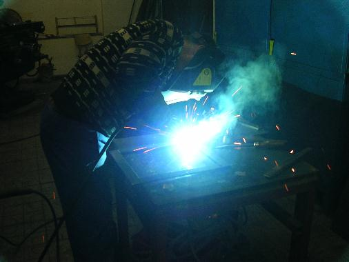
Svářečské práce dle EN 287-1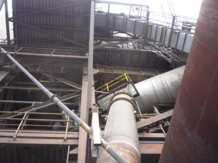
Obslužné technologické lávky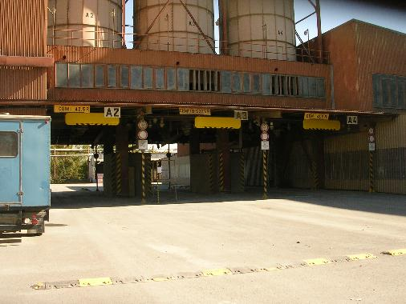
Průmyslové zábrany vjezduPřehled živnostenských listů, zápisu ochranné známky u Úřadu průmyslového vlastnictví a softwarových certifikací.
Úřad průmyslového vlastnictví ČR • číslo zápisu 315623
Logo a značka GTC Plus je chráněnou průmyslovou ochrannou známkou zapsanou v rejstříku ochranných známek ÚPV ČR ode dne 8. 12. 2010.
Živnostenský list • Okresní úřad Přerov
Oprávnění k zámečnické výrobě a montáži strojních součástí (čj.: ŽÚ-1848/2391/00; ev.č. 380801-24149-01).
Městský úřad v Hranicích • OŽÚ/7192/07
Oprávnění k výrobě strojů a zařízení pro všeobecné účely (ev.č. 380803-52103).
Městský úřad v Hranicích • OŽÚ/7190/07
Oprávnění k vypracování technických návrhů a konstrukční činnosti (ev.č. 380803-52104).
Techsoft Poprad • reg. číslo 2005SR02999
Originální komerční licence profesionálního 3D/2D CAD systému pro strojírenské modelování.
Technická dokumentace výrobce • GTC Plus Hranice
Kompletní technický a rozměrový list válcového regulačního uzávěru VRU 200 až 400.
Spojte se přímo s vedením společnosti a technickou kanceláří. Rádi posoudíme váš projekt, navrhneme technické řešení nebo provedeme zaměření na místě.
GTC Plus Hranice, s.r.o.
Sídlo: Rezkova 1669, Hranice I-Město, 753 01 Hranice
IČO: 06723241 • DIČ: CZ06723241
Datová schránka: zvux3fc
Kancelář a provozovna: Bělotínská 288, 753 01 Hranice (objekt před Cement Hranice, a.s.)
Odešlete specifikaci vašeho požadavku na stroj, linku nebo servisní zásah.